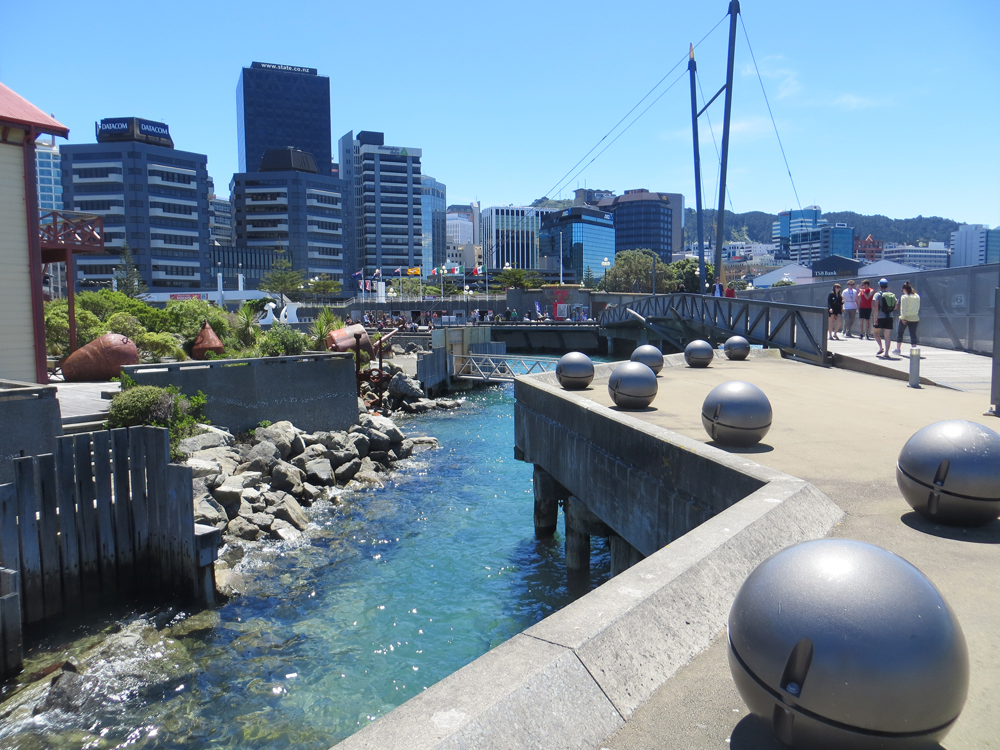
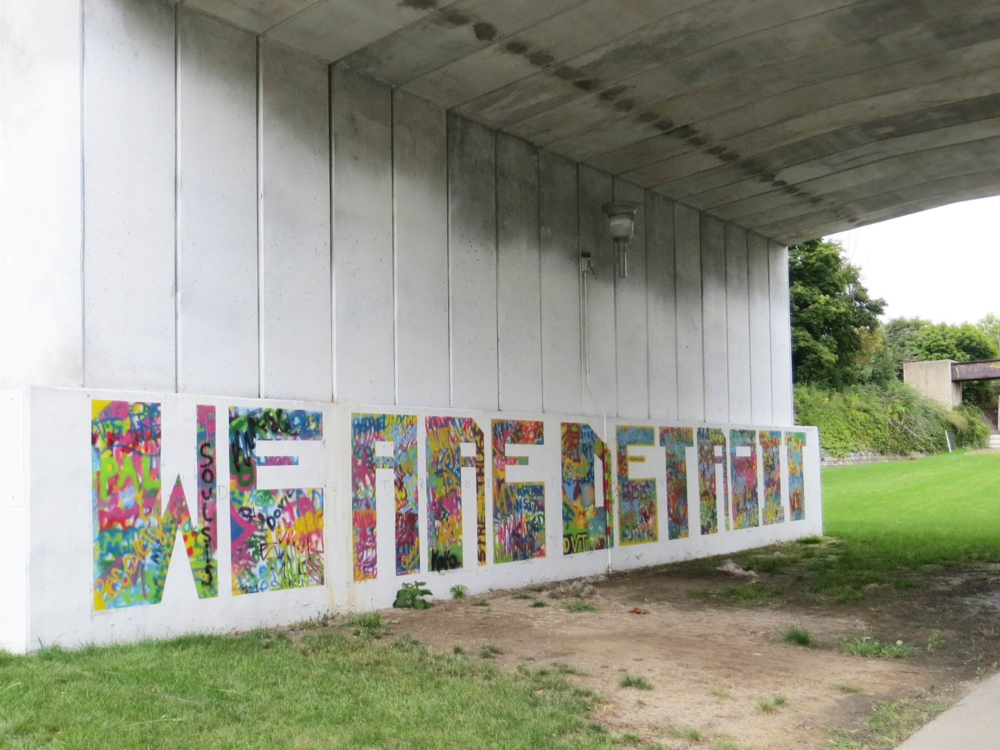
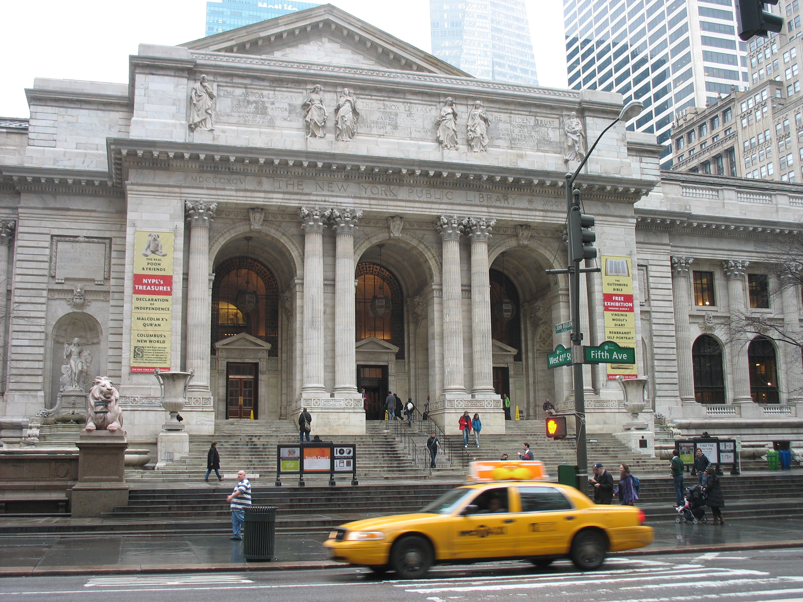
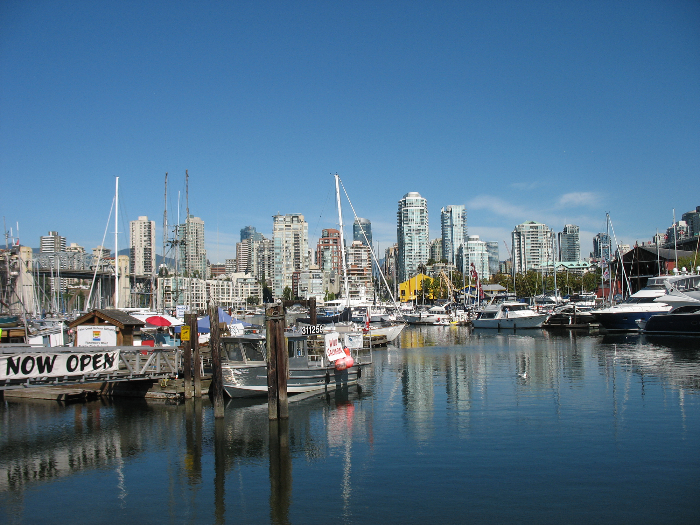
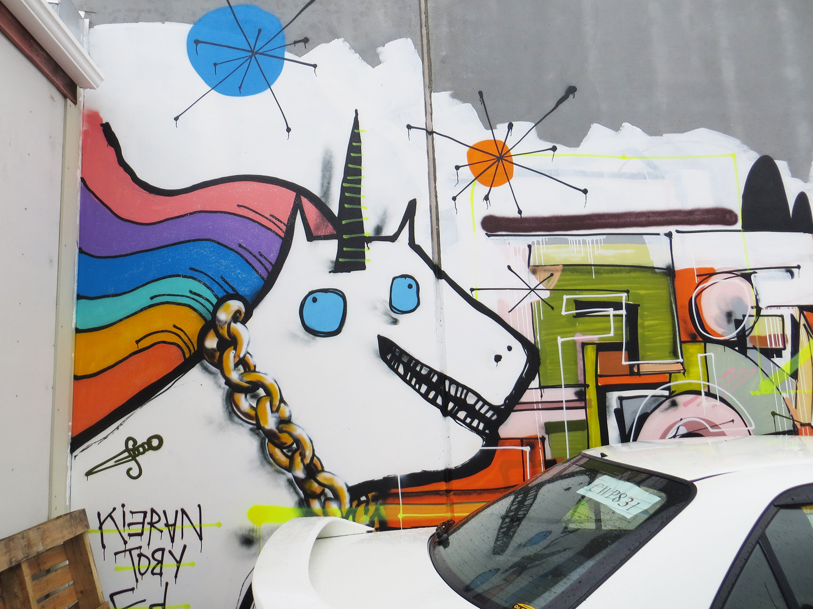
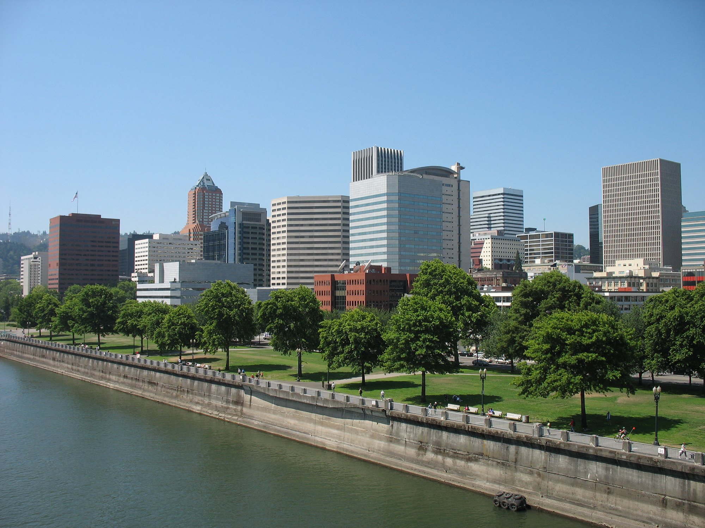

Wellington, New Zealand

Wellington is a beautiful city on the southern tip of the North Island of New Zealand. It is known for it's extreme wind. I love the architecture of the public spaces by the waterfront, and their national museum and art gallery, Te Papa. I've had the pleasure of visiting the city on two separate visits.
Detroit, Michigan

Detroit has an amazing street art culture, and many of the walls in the city are covered in graffiti, street art, and murals. The Detroit Institute of Arts Museum is an impressive collection of art from all over the world. I visited a friend in Detroit a few years ago, and she drove me all over the city to view the street art.
New York City, New York

I've only been to New York City for one visit, but I fell in love with the museums, subways, and public spaces. I'd love to visit again soon, and would also love to live there someday.
Vancouver, BC

Vancouver, BC is my favorite city on the west coast. As you drive over a bridge into the city from the south, you see tall glittering glass buildings all along the waterfront. It is a beautiful sight to see on a sunny day. I usually visit here once every summer.
Taupo, New Zealand

Taupo is city in the middle of the North Island in New Zealand, know for it's lake and nearby waterfalls. I particularly enjoyed the street art and murals that covered the alleyways in the city center. I got to visit Taupo for a few days in 2013.
Portland, Oregon

I couldn't finish this list without including my home, Portland, OR. I've lived here for ten years. I love that it has the amenities of a larger city, but still feels very small. Its proximity to the ocean and mountains is also a plus.